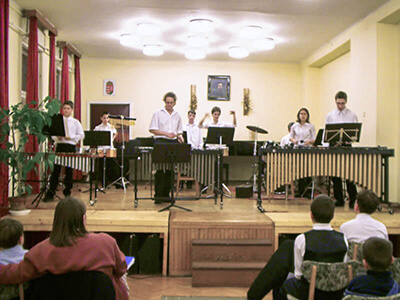
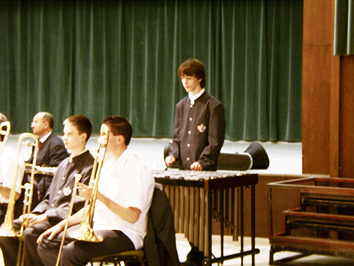

My Story
Hello there and welcome to my website.
First of all, let me introduce myself and tell you a little of my music background.
My name is Máté Moldován, I was born in Hungary into a musical family. The first instrument in my hand was a small guitar at the age of 4, that’s when I started to write songs. My father was a huge fan of country and bluegrass music and his band was always in need of drummer. He noticed my good sense of rhythm in my early age, so he soon enrolled me in Péter Kiraly-König Elementary Art School to study percussion. Along with percussion I also studied piano and music theory. During these years I regularly performed in front of large audiences, individually and as part of the school's band as well on various instruments, ranging from Xylophone to Taiko drums.
Progressing further, I studied Classical Percussion at István Vántus Practicing Vocational Secondary School in Hungary, from where I graduated. During my studies I also had the availability to take extra curriculum, a course in Classical Singing which I thoroughly enjoyed. Broadening my classical music knowledge, I took part in many different formations within the school as a drummer, and I also had the opportunity to participate in the school's choir, and to regularly perform in the city's official ensemble, the Symphonic Orchestra of Szeged for 4 years, which was a huge opportunity for me to get familiar and learn the operation of a big orchestra band.
Alongside these engagements, I also directed my own music band as a lead singer, The Last Fairy-tale. The band played new wave rock music and was successful until its dissolution five years later. During those years we performed at various festivals (SZIN, California Festival, East Fest, and many more...) across Hungary and came first in talent shows (JATE, Békéscsaba) as well. We released two albums which we recorded ourselves in our home studio. After graduating, I moved to Budapest where I continued my education studying Sound Engineering at Athéné Vocational and Business Training School.
I moved to the United Kingdom in 2012 to further my music knowledge and broaden my career opportunities in music writing. After creating my very own 'bedroom' studio, in 2015 I released an EP (mdvn music), which is available through Soundcloud, Youtube, iTunes and Spotify.
During these years I realised my desire to advance my music in a more melodic and theatrical way.
I also started to record natural, 'life' sounds to implement them into my music, to create a less 'sterile' electronic music with more movements going on in the background and I continually expand my ‘found sound’ folder since. That was the point when I decided that I have to take advantage of my classical knowledge and use it when writing music.
I have always been fascinated by the different ways in which music is used within various industries.
A practice that particularly caught my attention is how music is used in the gaming and film industry.
With this in mind, I have enrolled to the Sound for Games and Apps course at dBS Bristol University, to broaden my skillset and deepen my knowledge using multiple composing, sound design and implementation software.
freetime activities
Outdoors
Mountain climbing, camping with friends and being in the nature
Sailing
Lake Balaton is a wonderful place to practice my sailing skills.
Instruments
My collection of instruments is constantly expanding.
Games
mostly RPG, but I play any game with interesting sound design or music…
Cycling
I just love cycling whether it’s for commuting or longer journeys
Movies
especially documentaries, sci-fi and mind twisting films